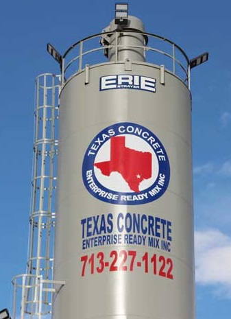

TEXAN Concrete Ready Mix has established itself as Houston’s industry leader in the delivery of high performance ready mixed concrete with superior customer service at a competitive price. We specialize in commercial, industrial and residential construction projects, with the belief that no job is too big or too small. All our customers are treated with the same respect whether ordering 1 yard or 100 yards of concrete. Our friendly and knowledgeable staff is trained to ensure that placing your order is fast and easy. You can count on reliable scheduling thanks to our experienced dispatchers in our state of the art dispatching center which combines electronic order entry, automated concrete batching and GPS truck tracking which ensures that your concrete purchasing experience is outstanding in every way possible. We pride ourselves on developing and maintaining long term quality relationships with our customers while striving to exceed their expectations in every aspect of the process.

For the last 3 years Texas Concrete has had a contract to supply the City of Houston Public Works Department with Concrete for the entire Houston area.
TEXAN Concrete Ready Mix has been serving Houston and the surrounding areas since 2008. We are locally owned and operated, allowing you to enjoy the fastest possible service and the most effective solutions for all your Houston cement mixing and concrete supply needs. Our expert technicians use only ASTM-approved materials and SEMA-approved add mixes. We employ Alkon Spectrum 6 batching technologies to ensure the perfect mix every time, allowing you to enjoy the most durable and reliable results.
The TEXAN Concrete Ready Mix team has extensive experience in building infrastructure, pouring foundations for commercial and residential structures and creating parking solutions for private and public facilities. We can deliver Houston ready mix concrete solutions suitable for a wide range of applications, including the following:
Our team of technicians will work with you to identify the right formulations and solutions for all your concrete
requirements. This collaborative approach allows TEXAN Concrete Ready Mix to provide the best services for our
clients throughout the Houston metropolitan area.
If you need a dependable source for concrete and cement, the experts at TEXAN Concrete Ready Mix can deliver
the right solutions to suit your needs. We can create custom formulations designed specifically for your project
and can enhance the strength of your structures with the toughest and most durable concrete and cement in the
industry. To learn more about the services we offer or to schedule concrete pouring or mixing in the Houston
metropolitan area, call us today at 713-255-3333. Our team of concrete technicians will provide you with the
best solutions for all your concrete pouring, mixing and formulating needs.